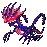

📖 英語版の図鑑説明
It was inside a meteorite that fell 20,000 years ago. There seems to be a connection between this Pokémon and the Dynamax phenomenon.
日本語訳
2万年前に落下した隕石の中にいた。ダイマックス現象と深い関わりがあるとされる。
📝 この図鑑文に出てくる英単語
| 英単語 | 意味 | 品詞 | レベル |
|---|---|---|---|
| inside | 中に | 前置詞 | 中1 |
| meteorite | 隕石 | 名詞 | 大学 |
| fell | 落ちた | 動詞 | 中2 |
| connection | つながり | 名詞 | 高校 |
| phenomenon | 現象 | 名詞 | 大学 |
文法ポイント seems to be a は「seem/appear to + 動詞」で「〜するように見える、〜らしい」という意味です。
💡 英語名「Eternatus」の由来
英語名「Eternatus」は、Aether（天空の上層を満たすとされたエーテル）、eternal（永遠の）、eternity（永遠）とaeternatus（ラテン語風の「永遠の」）を組み合わせた名前と考えられている。フランス語の名前は「Éthernatos」で、éternel（永遠の）、éther（エーテル）、θάνατος thắnătos（古代ギリシャ語で「死」）から作られている。
出典 Bulbapedia
✨ ムゲンダイナの豆知識
『ソード・シールド』のデータには、ラストバトルで戦う「ムゲンダイマックス」のムゲンダイナが別の姿として入っている。ただし一度も配布されておらず、手に入れることはできない。
出典 Bulbapedia
📊 ムゲンダイナの種族値
HP140
こうげき85
ぼうぎょ95
とくこう145
とくぼう95
すばやさ130
合計 690
❓ よくある質問
- ムゲンダイナの英語名は？
- ムゲンダイナの英語名は「Eternatus」です。
- ムゲンダイナの英語名「Eternatus」の由来は？
- 英語名「Eternatus」は、Aether（天空の上層を満たすとされたエーテル）、eternal（永遠の）、eternity（永遠）とaeternatus（ラテン語風の「永遠の」）を組み合わせた名前と考えられている。フランス語の名前は「Éthernatos」で、éternel（永遠の）、éther（エーテル）、θάνατος thắnătos（古代ギリシャ語で「死」）から作られている。
- ムゲンダイナは英語版の図鑑でどう説明されている？
- 「It was inside a meteorite that fell 20,000 years ago. There seems to be a connection between this Pokémon and the Dynamax phenomenon.」と書かれています。日本語にすると「2万年前に落下した隕石の中にいた。ダイマックス現象と深い関わりがあるとされる。」という意味です。
ムゲンダイナは第8世代（ガラル地方ほか）のポケモンです。第8世代（ガラル地方ほか）の英語名一覧 →